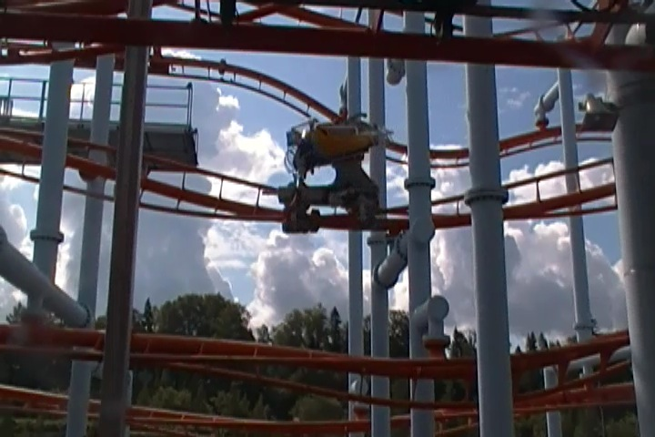
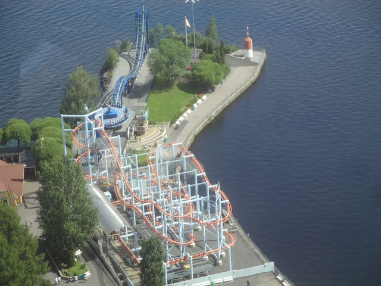

| |
Trombi Review

We're here at Särkänniemi. Today's ride we'll be reviewing for you is Trombi. A Zamperla Volare. I know these rides have a horrendous reputation in the roller coaster community. But I've actually enjoyed the last couple Volares I rode. So I'm hoping that this'll continue that trend. So let's move on and ride. We walk up and see the way you load. It's a very bizzare way to load. The cars are tilted and you simply climb in the cars and sort of stand up, only at a 45 degree angle. Then the ride operator pulls down the cage, locking you in. It feels very awkward to be in this position. Because as you can tell, it sort of feels like a prison when you are like this. After doing that, you then tilt into flying position. Then you go into the spiral lifthill. I have got to say that the spiral lifthill is one of the coolest lifthills on a rollercoaster. It just has a trippy and awkward feeling to it. But at the same time, it sort of has a feeling of impending doom to it. And considering the way Volares are treated within the roller coaster community, I'm sure a lot of enthusiasts get a sense of dread on these rides. Then, we reach the top. We go through an S Curve, we then get a good view of Särkänniemi. But we're just thinking of the impending doom that we're about to go through. Down the first drop, it feels like we're going dangerously fast because right after this, we're about to go through one of those ridicously tight turns we have seen in the line. We embrace to be donkey kicked in our skulls, and sadly, we get a decent smack. Now granted. This isn't super bad. I can certainly think of worse rides. But considering how the last two volares I rode were actually kind of smooth, this was incredibly dissapointing. I hated that the enthusiasts compaining about Volares being rough were right in this case. Right after that, we go straight through an inline twist. And all I can say is this. Inline Twists on Volares are really fun. You get some crazy hang time as you suprisingly have enough room in your hamster cage to sort of float upsidedown and get some hangtime (Oh, and to those who don't consider inline twists on flying coasters to be inversions, I don't know what crack you are smoking, but I just have two things to say. #1: Stop smoking crack. It's not cool and it'll kill you. #2: Go ride a Volare and then you'll realize "Oh wait, I'm upsidedown"). Yeah, it's a bit more clunky on this one. But even on the really rough Volares, the inline twists are still fun. You then go through another tight turn before hitting a mid course brakes. OUCH!! GOD DAMN IT!!! STUPID HEADBANGING!!! We then drop again before going through another tight turn, giving us yet another SMACK!!! F*CK!!! We then are led into another inline twist. YAY!!! More Hangtime! And we're upsidedown! =) We then go through a tight turn, and OUCH!!! Why did this one have to suck!? =( This leads us into another set of mid course brakes. So basically, we did everything that we did before the mid course brakes. After these next mid course brakes, we then go down another small drop before going through another tight turn. DONKEY KICK!!! OUCH!!! So basically, the last third of the ride is just like the first two thirds without the inline twists, only replaced with twisty bits. And considering on this one, the inline twists are the only thing that is good about it at all, this is a problem. Then you get into the brakes. Aww man. Now I see why coaster enthusiasts hate Volares so much. On top of the headbanging, the whole ride is really repetitive. I mean, the first two halfs are exact clones of each other. I really wouldn't recommend this ride as yeah. It's pretty rough, the capacity isn't that good, and it just plain sucks. Yeah. Volares have the potential to be fun rides. But not this one.
4/10
Location: Särkänniemi
Opened: 2005
Built by: Zamperla
Last Ridden: June 27, 2014
I have ridden this exact same ride at the following parks.
Canada's Wonderland
Coney Island
Trombi Photos


Home
|